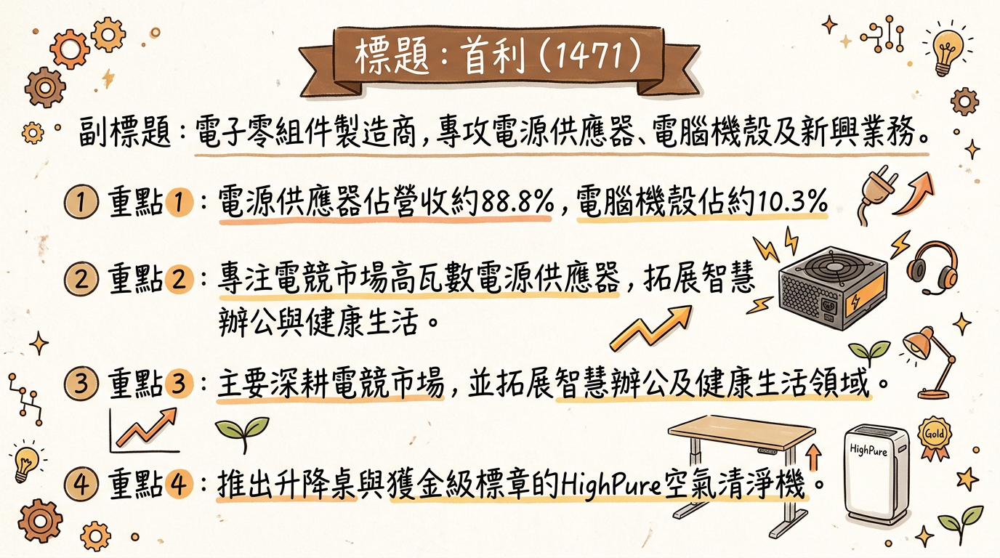
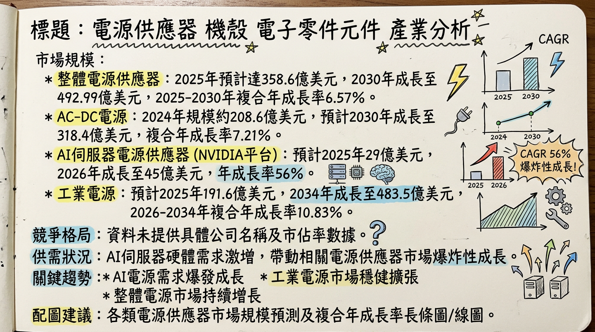
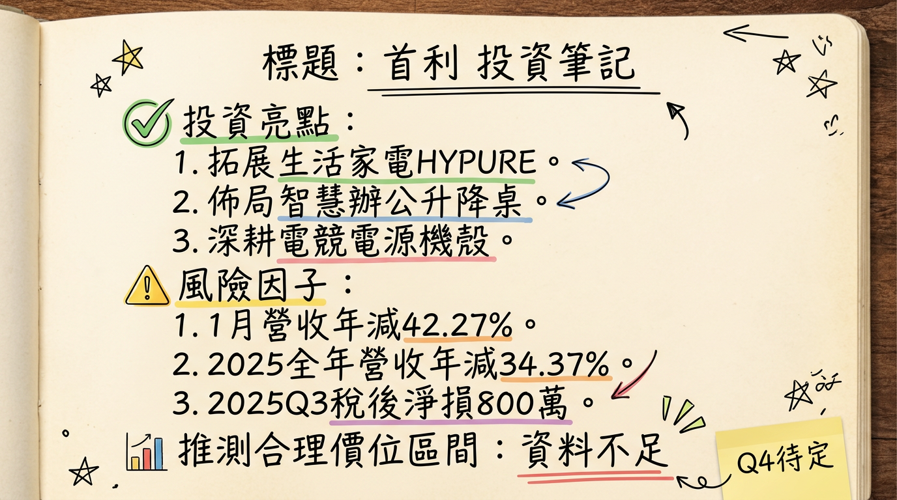

首利 (1471) 作為電子零組件製造商，正積極透過電競自有品牌 (Apexgaming/MS gaming)、智慧辦公 (升降桌) 及健康生活 (HighPure 空氣清淨機) 進行多元化轉型，以應對傳統業務的挑戰。儘管公司財務結構穩健且現金充裕，但近期營收持續疲軟、本業虧損，營運表現面臨壓力。未來成長動能寄望於新興業務的市場拓展與 AI PC 趨勢的間接帶動，惟目前尚未反映在實質獲利表現上，投資人宜審慎觀察。
首利實業股份有限公司主要業務為電子零組件的製造與銷售，核心產品涵蓋電源供應器、電腦機殼及新興業務。
| 產品類別 | 營收佔比 |
|---|---|
| 電源供應器 | 88.8% |
| 電腦機殼 | 10.3% |
| 其他營運事業部 | 0.9% |
首利的主要生產基地設於中國東莞，旗下擁有誠翔電子、東莞首利及東莞順誠商貿三家子公司。
| 月份 | 金額 (萬元) | 月增率 MoM | 年增率 YoY |
|---|---|---|---|
| 2026年01月 | 1,032 | -5.2% | -42.27% |
| 2025年12月 | 1,088.6 | +20.7% | -55.09% |
| 2025年11月 | 901.9 | -35.92% | -56.13% |
| 2025年10月 | 1,407.6 | -18.48% | -52.72% |
| 2025年09月 | 1,726.9 | +22.77% | -28.84% |
| 2025年08月 | 1,406.5 | -7.06% | -43.02% |
* 每股盈餘 (EPS)：-0.04 元 (季減 85%，年減 117%)
* 本期淨損：0.08 億元
* 毛利率、營業利益率：未提供最新一季具體數據，但法說會提及營收大幅下滑，營業毛利下降，由盈轉虧。
* 全年 EPS：0.04 元
* 全年 EPS：-0.05 元 (截至2025年第三季累計)
目前未找到 2025-2026 年來自券商的具體目標價報告或 EPS 預估數字。
| 券商名稱 | 目標價 (新台幣) | 評等 | 日期 |
|---|---|---|---|
| N/A | N/A | N/A | N/A |
| 項目 | 2025年第三季 | 2025年前9個月累計 |
|---|---|---|
| 毛利率 | 8.45% | 9.16% |
| 營業利益率 | -47.46% | -47.77% |
| 稅後淨利率 | -12.24% | -5.25% |
| 單季營業利益成長率 | ||
| 2025年第二季 | 0.96% | |
| 2025年第一季 | 10.12% | |
| 2024年第四季 | 2.94% | |
| 2024年第三季 | 15.3% |
2025 年首利營收表現持續疲軟，導致毛利率相對偏低，且營業費用佔營收比重上升，使得營業利益率與稅後淨利率呈現負值，顯示本業營運仍處於虧損狀態。儘管 2025 年 12 月自結稅後淨利為 700 萬元 (年增 150%)，單月 EPS 達 0.04 元，但這可能受一次性收益或費用調整影響，並未扭轉整體營收年減 55.09% 的趨勢。公司轉型期間，新業務的規模效應尚未顯現，導致整體獲利承壓。
首利產品線廣泛，涵蓋多個產業。
| 產品類別 | 2024年市場規模 (預估) | 2025年市場規模 (預估) | 2026年市場規模 (預估) | 預測期 CAGR | 預測期 |
|---|---|---|---|---|---|
| 電源供應器 | N/A | 358.6 億美元 | N/A | 6.57% | 2025-2030年 |
| AC-DC 電源 | 208.6 億美元 | N/A | N/A | 7.21% | 2024-2030年 |
| AI 伺服器電源 (NVIDIA) | N/A | 29 億美元 | 45 億美元 | 56% | 2025-2026年 |
| 工業電源 | N/A | 191.6 億美元 | N/A | 10.83% | 2026-2034年 |
| 電腦機殼 | N/A | N/A | N/A | N/A | N/A |
| 電動升降桌 | 68.74 億美元 | N/A | N/A | 9.4% | 2026-2032年 |
| (另一份報告) | 33.22 億美元 | N/A | N/A | 6.2% | 2025-2031年 |
| 智慧辦公 | 539 億美元 | N/A | N/A | 13.9% | 2025-2030年 |
| 空氣清淨機 | N/A | 179.1 億美元 | 191.2 億美元 | >7.5% | 2026-2035年 |
| 智慧空氣清淨機 | N/A | 93.3 億美元 | 105.5 億美元 | 13.2% | 2025-2026年 |
| (另一份報告) | N/A | 185 億美元 | N/A | 7.90% | 2025-2030年 |
首利在各產品領域面臨不同競爭者。
| 產品類別 | 主要競爭者 (公司名稱) | 競爭優勢/市佔率 (若有) | 首利在該領域的定位 |
|---|---|---|---|
| 電源供應器 | 台達電 (Delta), 光寶科 (Lite-On), 首利 (TBD) | 服務器 PSU 市場的領導者，約佔 65% 的市場份額。 AI 伺服器電源業務在 2025-2026 年預期有 56% 年成長率。 | 專注於電競領域，自有品牌「Apexgaming」/「MS gaming」電源供應器。有望在 Tier 2 市場中承接 AI 伺服器電源溢出訂單。 |
| 電腦機殼 |
|---|
| 機殼 | 聯力 (Lian Li), 酷媽 (Cooler Master), 振華 (Super Flower), FSP (全漢), Antec, Corsair, NZXT, Phanteks, Fractal Design, In Win, Zalman | 聯力以獨特設計和鋁質工藝聞名；酷媽則以散熱和機殼選擇多樣性著稱。市場競爭激烈。 | 自有品牌電競機殼，與電源供應器搭配銷售。 |
|---|
| 電動升降桌 | FSD (FlexiStand), FSL (FlexiStand Labs), LEL, D-Flex, D-Flex 2.0 | 中國電動升降桌市場滲透率不足 5%，成長潛力巨大。 |
|---|
| 空氣清淨機 | 達爾膚生技 (DR. WU), 佳醫 (Medfirst), 大金 (Daikin), 國際牌 (Panasonic), 夏普 (Sharp), 3M, Honeywell, Coway, Philips, Blueair | 達爾膚與佳醫為台灣市場主要廠商，市場競爭激烈。 | 自有品牌「HighPure」，主打專利技術優勢，積極尋求 OEM/ODM 合作機會。 |
|---|---|---|---|
| 空氣清清淨機 | 達爾膚生技 (DR. WU WU), 佳醫 (Medfirst), 大金 (Daikin), 國際牌 (Panasonic), 夏普 (Sharp), 3M, Honeywell, Coway, Philips, Blueair | 達爾膚與佳醫為台灣市場主要廠商，市場競爭激烈。 | 自有品牌「HighPure」，主打專利技術優勢，積極尋求 OEM/ODM 合作機會。 |
| 空氣清淨機 | 達爾膚生技 (DR. WU), 佳醫 (Medfirst), 大金 (Daikin), 國際牌 (Panasonic), 夏普 (Sharp), 3M, Honeywell, Coway, Philips, Blueair | 達爾膚與佳醫為台灣市場主要廠商，市場競爭激烈。 | 自有品牌「HighPure」，主打專利技術優勢，積極尋求 OEM/ODM 合作機會。 |
|---|---|---|---|
| **電動升降桌 | FSD (FlexiStand), FSL (FlexiStand Labs), LEL, D-Flex, D-Flex 2.0 | 中國電動升降桌市場滲透率不足 5%，成長潛力巨大。 |
| 空氣清淨機 | 達爾膚生技 (DR. WU), 佳醫 (Medfirst), 大金 (Daikin), 國際牌 (Panasonic), 夏普 (Sharp), 3M, Honeywell, Coway, Philips, Blueair | 達爾膚與佳醫為台灣市場主要廠商，市場競爭激烈。 | 自有品牌「HighPure」，主打專利技術優勢，積極尋求 OEM/ODM 合作機會。 |
|---|---|---|---|
| **電源供應器 | 台達電 (Delta), 光寶科 (Lite-On), 康舒 (Compuware), 群電 (Acbel), 僑威 (CWT), 全漢 (FSP) | 服務器 PSU 市場的領導者，約佔 65% 的市場份額。 AI 伺服器電源業務在 2025-2026 年預期有 56% 年成長率。 | 專注於電競領域，自有品牌「Apexgaming」/「MS gaming」電源供應器。有望在 Tier 2 市場中承接 AI 伺服器電源溢出訂單。 |
| 電源供應器 | 台達電 (Delta), 光寶科 (Lite-On), 康舒 (Compuware), 群電 (Acbel), 僑威 (CWT), 全漢 (FSP) | 台達電為服務器 PSU 市場的領導者，約佔 65% 的市場份額。 AI 伺服器電源業務在 2025-2026 年預期有 56% 年成長率。 | 專注於電競領域，自有品牌「Apexgaming」/「MS gaming」電源供應器。有望在 Tier 2 市場中承接 AI 伺服器電源溢出訂單。 |
| 電動升降桌 | FSD (FlexiStand), FSL (FlexiStand Labs), LEL, D-Flex, D-Flex 2.0 | 中國電動升降桌市場滲透率不足 5%，成長潛力巨大。 |
| 空氣清淨機 | 達爾膚生技 (DR. WU), 佳醫 (Medfirst), 大金 (Daikิน), 國際牌 (Panasonic), 夏普 (Sharp), 3M, Honeywell, Coway, Philips, Blueair | 達爾膚與佳醫為台灣市場主要廠商，市場競爭激烈。 | 自有品牌「HighPure」，主打專利技術優勢，積極尋求 OEM/ODM 合作機會。 |
|---|
| 機殼 | 聯力 (Lian Li), 酷媽 (Cooler Master), 振華 (Super Flower), FSP (全漢), Antec, Corsair, NZXT, Phanteks, Fractal Design, In Win, Zalman | 聯力以獨特設計和鋁質工藝聞名；酷媽則以散熱和機殼選擇多樣性著稱。市場競爭激烈。 | 自有品牌電競機殼，與電源供應器搭配銷售。 |
|---|---|---|---|
* 2025 年 12 月合併營收新台幣 1,088.6 萬元，年減 55.1%。
* 2025 年全年累計營收新台幣 1.83 億元，年減 34.37%。
* 顯示傳統業務仍面臨顯著挑戰，新業務尚未能有效彌補營收缺口。
| 時間點 | 成長動能 | 關聯性 |
|---|---|---|
| 2025年 | 全球 PC 市場預期因 Windows 10 汰換需求及 AI PC 新品推出而小幅成長。 | 市場需求上升，間接拉動核心業務 |
| 2025年11月 | 公司關注 AI PC 與高效能應用需求，投入研發。 | 新產品開發方向 |
| 2025年11月 | 持續鞏固自有電競品牌「MS gaming」及空氣清淨機品牌「HighPure」的市場地位。 | 品牌價值深化 |
| 2025年11月 | 積極尋求海外新客戶與 OEM/ODM 合作機會 (電競產品、HighPure 空氣清淨機)。 | 市場擴張、客戶拓展 |
| 持續投入 | 電動升降桌產品，契合現代人對健康與效率的追求。 | 新興產品成長動能 |
| 2027年 (預計) | 完成母公司溫室氣體查證。 | ESG 達標，提升公司形象 |
| 2029年 (預計) | 完成子公司外部確信。 | ESG 達標，提升公司形象 |
首利 (1471) 目前處於積極轉型階段，試圖透過產品多元化和自有品牌策略開拓新藍海。然而，從現有數據來看，轉型效益尚未顯現在公司的營收和獲利表現上，反而面臨傳統業務萎縮和本業虧損的挑戰。
本報告由 AI 自動產生，資料來源為公開網路資訊，僅供參考，不構成投資建議。產生時間：2026-03-09 22:04


